log_pres<-log(forbes$pres)
model_forbes<-lm(forbes$bp~log_pres)5 Make it Work
Just because an assumption or two isn’t met, that doesn’t mean you can’t use regression modeling. It just means you have to work a little harder at it.
5.1 Simple Transformations
We know from the work in ?sec-chap4 that the relationship between barometric pressure and boiling point is not quite linear. Figure 5.1 shows the fitted regression line and the resulting fitted vs. residual plot with clear curvature. So what do we do about plots that aren’t linear? We make them linear.
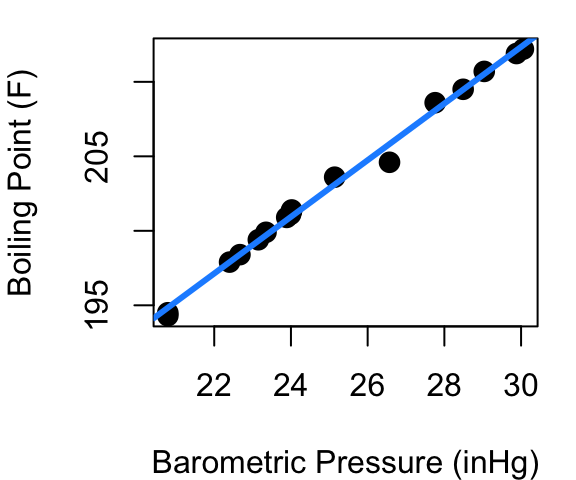
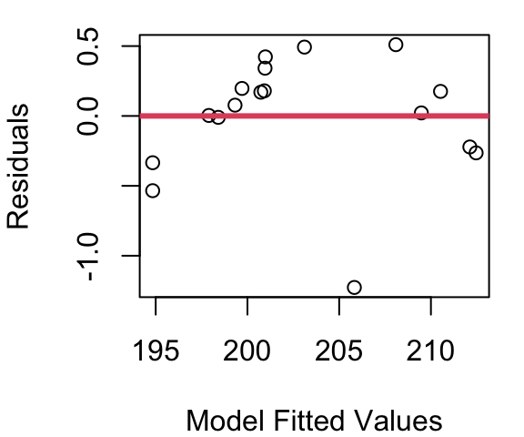
The idea is this: rather than model boiling point as a function of pressure directly, could we model boiling point as a function of the square-root of pressure? Or log(pressure)? There are four main transformations to consider when trying to make non-linear data more linear: Squares, square-roots, inverses, and logs. Trial and error plus a little exploration might lead you beyond those four, but those are always good places to start.
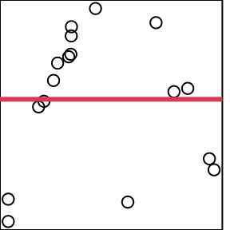
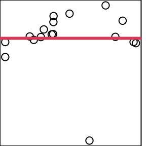
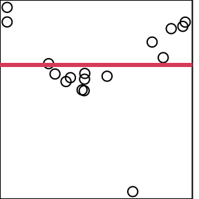
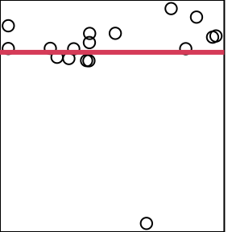
Figure 5.2 shows the resulting fitted vs. residual plot for each of these transformations applied to pressure. Axis labels are removed because we’re focused only on the shape of the scattered points here and how closely they follow the red line.
Figure 5.2 (a) shows that results from modeling boiling point as a function of \(pressure^2\) is an even more pronounced parabola than what was originally seen in Figure 5.1; and Figure 5.2 (c) shows that when boiling point is modeled as a function of \(\frac{1}{pressure}\) the parabola flips to become concave up, but does not flatten considerably. From part (b) it is clear that modeling using \(\sqrt{pressure}\) is a step in the right direction, but it is the model using \(log(pressure)\) in (d) that is the clear winner of these four.
This means that rather than
\[boiling\space point=β_0+β_1pressure+ε\]
our model will take the form of
\[boiling\space point=β_0+β_1log(pressure)+ε\]
so a plot of our linear fit becomes what is shown in Figure 5.3. The estimated coefficients of the transformed model come out to be\(\hat{β_0}=\) 47.8638 and \(\hat{β_1}=\) 48.2467. So now to estimate the boiling point when \(pressure=28\) we’d have
\[ 47.8638+48.2467\times log(28)=208.6317 \]
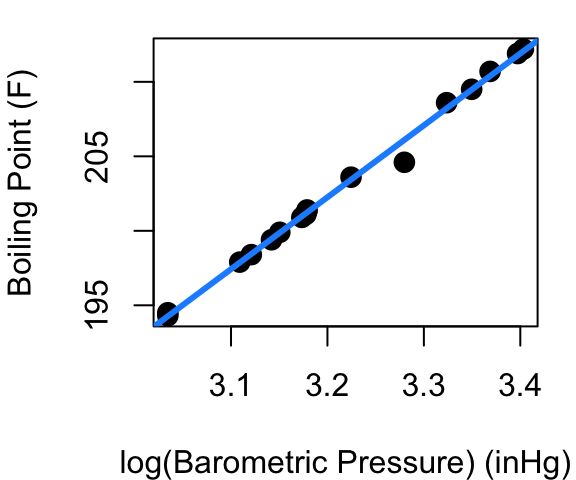
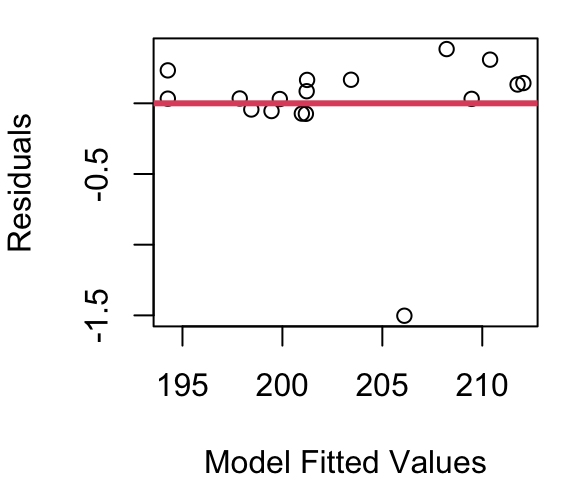
Finding a transformation that makes your linear model work can be a challenge. Maybe your data needs \(\frac{1}{x^3}\) or some other less obvious approach - that’s fine. Just start by looking at the shape of the curve you see in your data and consider what function will reverse that shape to create a line. At least one of squares, square-roots, inverses, and logs will usually show some promise and then you can trial and error your way from there to find \(x^4\) actually does a better job than \(x^2\).
It is to your advantage though to use a simpler transformation when possible. Why? Interpretation and communication. It’s pretty straight-forward to tell someone that boiling point is linearly related to the log of barometric pressure, but to try explaining that the square-root of boiling point is linearly related the inverse log of barometric pressure.
We’ve transformed X here, but you can also transform Y. Transforming X is generally preferable, because 1)every confidence interval or prediction interval would need to be either transformed back to original units, or interpreted in the revised transformed scale and 2) later we’ll be working with models that include more than one X and transforming Y will impact the relationships for all X at once rather than allowing you to tweak each separately.
In R
When transforming data for linear modeling in R you have two options. First, you can create new variables for use in the lm command:
This takes an extra line of code but sometimes it’s the cleanest approach if you’re using the transformed x for uses beyond your linear model.
Second, you can use the I function inside the lm:
model_forbes<-lm(bp~I(pres^2), data=forbes)This is a bit simpler as it is all in one line and when coupled with a data statment makes it 100% clear that both your X and Y live within the named data frame.
5.2 Log-Log Transformation
One transformation that is quite common for violations in linearity and Normality involves taking the log of both your X and your Y term. Consider the plots below in Figure 5.4 showing the body and brain weights of 62 mammals. The raw data in fig (a) shows a hard to distinguish clump of points in the lower left corner because African elephant and Asian elephant dwarf the other mammals, but the relationship does not appear to be linear. Part (b) of Figure 5.4 shows the raw data limited only to those mammals weighing less than 1,000kg. You’ll see a hard to distinguish clump still remains since 39 of the 62 mammals are under 5kg, and the points beyond the clump provide further evidence a simple line isn’t going to fit well. Part (c) shows the result when a log transformation is applied to both body and brain weight of all 62 mammals.
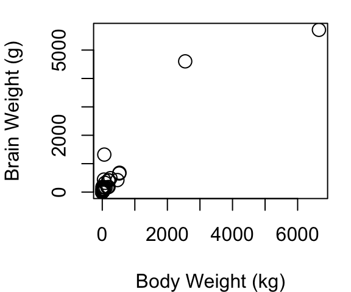
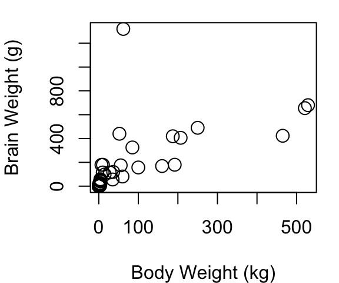
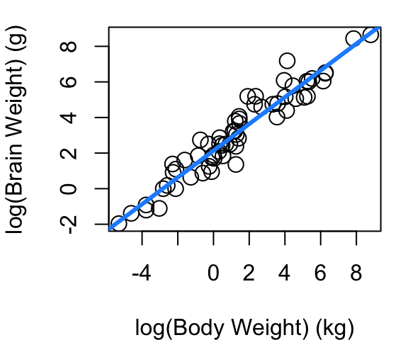
Below is the coefficent summary of the log-log model fit.
Estimate Std. Error t value Pr(>|t|)
(Intercept) 2.1347887 0.09604339 22.22734 1.183207e-30
log_body 0.7516859 0.02846356 26.40871 9.835792e-35The interpretation of coefficients in a log-log model is a bit special. Whereas in a non-transformed regression fit the slope is interpreted as the mean increase in Y associated with a one-unit increase in X, in the log-log case the slope is the mean percent increase in Y associated with a 1% increase in X. So in the case of mammal brain and body weight, we now see that a 1% increase in a mammal body weight is associated with a roughly 0.75% increase in brain weight.
As an example of how the transformation must be considered when making estimates, we turn to black-tailed deer. A 2023 study of dwarfed black-tailed deer on Blakely Island (Geiman and Long 2023) found an average body weight 40.2 kg. So using our model, what would be our best estimate of dwarf black-tailed deer brain weight? First we must take the log of 40.2, and after evaluating the linear fit, we must “un-log” the result to get back to the units of brain weight we care about.
#using predict.lm
new_wt<-data.frame(log_body=log(40.2))
pred_log_brain<-predict.lm(mod_mammal, new_wt)
exp(pred_log_brain) 1
135.8317 With a 95% confidence interval of:
pred.ci<-predict.lm(mod_mammal, new_wt, interval="conf", level=.95)
exp(pred.ci) fit lwr upr
1 135.8317 108.833 169.5281The Blakely Island researchers estimated a brain weight of 153.8g based on skull cavity measures of found skulls; not far from our estimate of 135.8g and included in our confidence interval for the mean brain weight that ranges from 108.8g to 169.5g.
5.3 Box-Cox Transformation
Real-world data often violate more than just the linearity assumption. Response variables might be skewed, or the variance might increase as the value of the response variable increases (heteroscedasticity). The Box-Cox transformation is a family of mathematical functions used to transform non-Normal dependent variables into a form that more closely follows a Normal distribution. The Box-Cox approach can also help in making variances more consistent to meet our homoskedasticity assmption for regression inference.
Box-Cox transformations are especially useful when:- Your response variable is strictly positive (\(y > 0\)).
- You observe non-constant variance (heteroscedasticity) in residual plots.
- The distribution of your response variable is highly skewed.
- Residuals from a fitted model are not normally distributed.
The down side to Box-Cox is model interpretability - you’ll definitely have some reverse transforming to do once your model is fit so that people can understand it.
The Box-Cox transformation is defined as follows for a positive variable y:
\[ y^{(\lambda)} = \begin{cases} \frac{y^{\lambda} - 1}{\lambda} & \text{if } \lambda \ne 0 \\ \ln(y) & \text{if } \lambda = 0 \end{cases} \]
Here, \(\lambda\) (lambda) is a parameter that determines the form and strength of the transformation. The logarithm (\(\ln y\)) is a special case when \(\lambda = 0\).
So how do you decide what value to use for \(\lambda\)? The algorithm to determine \(\lambda\) is an iterative one that includes repeated fitting a linear model on transformed data and selecting the \(\lambda\) with the maximum log-likelihood. Good news - R will do heavy repetitive lifting for you. Don’t just take R’s output and run with it though. You should always inspect diagnostic plots before and after applying Box-Cox to ensure it has improved model assumptions.
Figure 5.5 shows residuals from our CPU performance model first seen in Chapter 4. When CPU performance is modeled as a linear function of estimated performance the variance of residuals is seen to grow substantially from left to right in our fitted vs. residual plot and a QQ plot of the residuals reveals notable deviations from Normality.
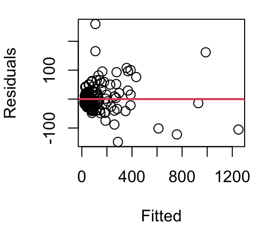
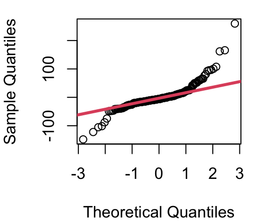
The plot shown in Figure 5.6 is produced when R is called on to evaluate values of \(\lambda\) in a Box-Cox tranformation. Dotted lines are included to make reading off the ideal \(\lambda\) easier. Details from R tell us the maximum log-likelihood occurs when \(\lambda =0.6262\).
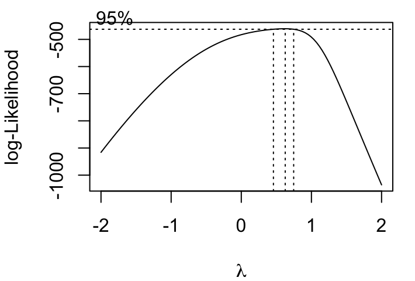
When the Box-Cox transformation with \(\lambda=.6262\) is then applied to CPU performance something interesting happens though. Yes, the variance becomes much more stable, but we also see that there is significant curvature in the relationship between estimated CPU performance and our new transformed performance outcome. This necessitates a second step: transforming X, then re-running the Box Cox algorithm to find the optimal \(\lambda\) when the transformed X is used to predict Y.
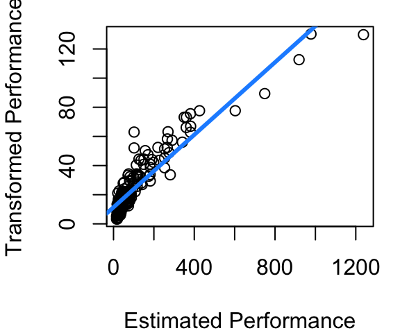
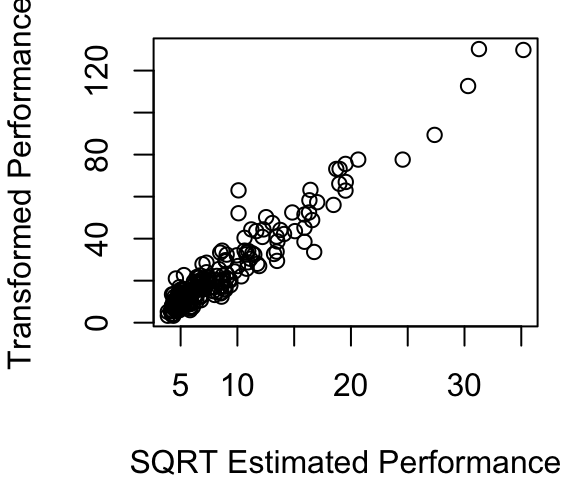
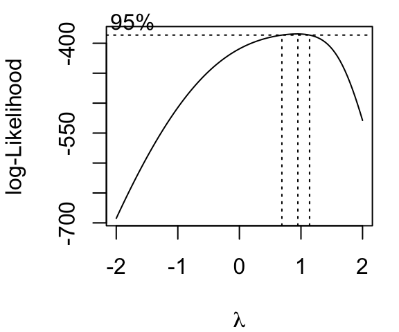
The curvature after the first Box-Cox round is shown in Figure 5.7 (a), with the fitted line overlaid in blue to make clear just how much curvature is present. Figure 5.7 (b) shows that if the square-root of estimated CPU performance is used instead of the estimated CPU performance directly the relationship becomes much more linear. Part (c) then shows the updated \(\lambda\) estimate is slightly smaller at 0.4242.
The revised model model for CPU performance is now shown in Figure 5.8. The curvature is much improved, the variance appears fairly constant across the fitted vs. residual plot, and the QQ plot of residuals is much improved over the original QQ plot of Figure 5.5.
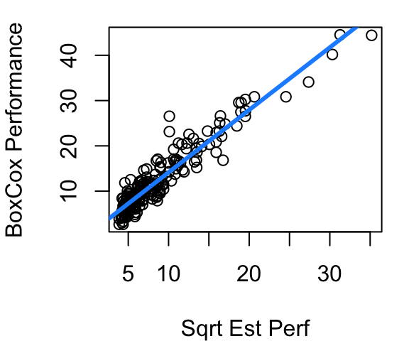
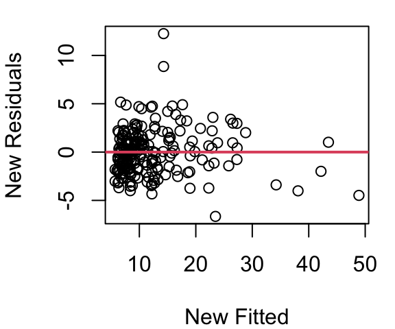
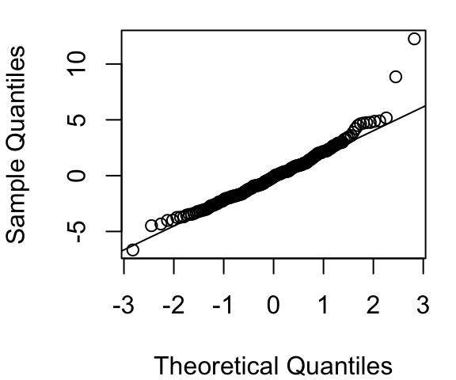
Work determining a model for CPU performance could certainly end here. Figure 5.8 looks quite reasonable. However, there is still slight curvature in our data shown in plot (a). Maybe we then try a log(estperf) approach to handle curvature. Then a new Box Cox \(\lambda\) search would be needed.
Figure 5.9 shows the result of using log(estperf) to predict a Box Cox with \(\lambda=0.10101\) applied to CPU performance. The curvature issue is improved over what was seen in Figure 5.8 (a), but the variance in Figure 5.9 (b) is not nearly as consistent as in Figure 5.8 (b) and creates homoskedasticity concerns. Normality is reasonably met with both models
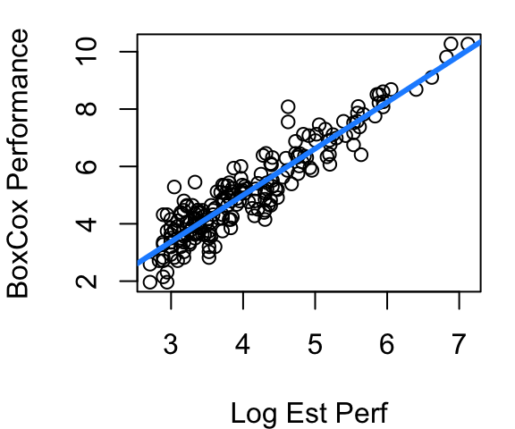
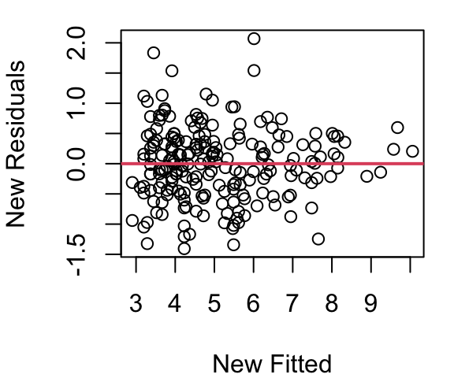
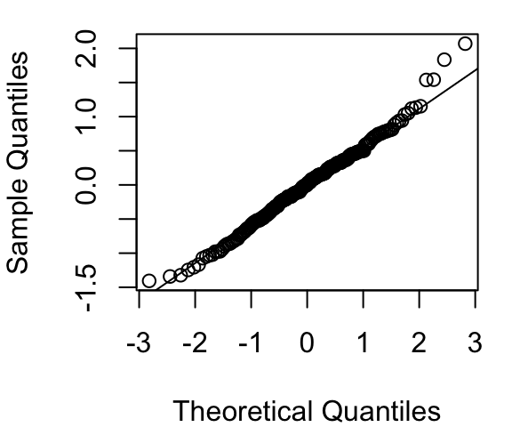
So which model is the right model? Box-Cox combined with square-root of estimated performance, or Box-Cox combined with log estimated performance? I prefer the square-root one, but really this is where you have to accept something not all students handle well. There is no one right model. As you gain experience with regression and other data science techniques you will learn this work has an element of art to it. Two different statisticians will quite reasonably come up with two slightly different models and that doesn’t mean either one is wrong.
Statistician George Box (yup, the Box in Box-Cox) is credited with saying “All models are wrong, but some are useful.” He’s also credited with admonishing that “Statisticians, like artists, have a bad habit of falling in love with their models.” Take these words to heart. If two competing models seem equally useful, pick one and move on with your life. But also, if you discover a flaw in your model, don’t be so wedded to it that you don’t revise it to fix the flaw.
In R
To work with Box-Cox transformations you’ll want to load the MASS library. From there it is as simple as using the boxcox function. The only input the function needs is your basic fitted model object, and it will then output the graph below.
library(MASS)
simple_mod<-lm(perf~estperf, data=cpus)
bc<-boxcox(simple_mod)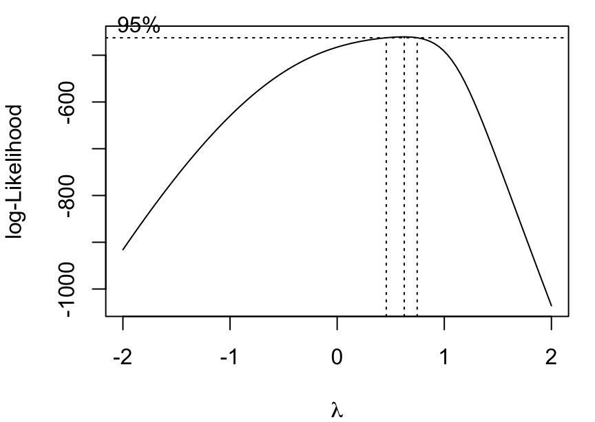
By saving the boxcox result as bc (or whatever other name you’d like) you are able to pull the optimal \(\lambda\) parameter by:
bc$x[which.max(bc$y)][1] 0.6262626And then apply the result:
bc_perf<-((cpus$perf^0.6262626)-1)/0.6262626
mod_bc<-lm(bc_perf~estperf, data=cpus)5.4 Unit change
There is one last transformation to be aware of and it’s the simplest of all: a change of units. Regardless of the units used to measure \(x\) and \(y\) the relationship between \(x\) and \(y\) should remain unchanged. This means if our car fuel efficiency data had km per liter instead of miles per gallon, heavier cars would still be less efficient than lighter cars. It also means if we measured boiling point in degrees Celsius instead of Fahrenheit, the relationship between barometric pressure and boiling point should be the same as we saw back in Figure 5.3 (a).
This doesn’t mean the fitted parameters stay the same as units change though. Consider our beer consumption model from Section 2.3. The data is recorded as cans of beer, but could just as easily have been measured in fluid ounces (and that probably would have been better for clarity). Let’s see how the model changes for the two measures of beer consumption:
mod1<-lm(bac~beers, data=bac)
summary(mod1)$coef Estimate Std. Error t value Pr(>|t|)
(Intercept) -0.01270060 0.012637502 -1.004993 3.319551e-01
beers 0.01796376 0.002401703 7.479592 2.969480e-06beer_oz<-bac$beers*12
mod2<-lm(bac~beer_oz, data=bac)
summary(mod2)$coef Estimate Std. Error t value Pr(>|t|)
(Intercept) -0.01270060 0.012637502 -1.004993 3.319551e-01
beer_oz 0.00149698 0.000200142 7.479592 2.969480e-06The intercepts of the two models are exactly the same, but the slopes are different. When beer is measure in cans, the slope is 0.01796 but when measured in fluid ounces, 12 times the can count, the slope is 0.0015. Notice that 12 times 0.0015 equals 0.01796. This makes sense because if \(bac=-0.0127+0.01796\times cans\) then the relationship can be equivalently expressed as \(bac=-0.0127+(0.01796/12)\times(cans\times12)\) (the 12s cancel out to make it all simply equal to multiplying by 1).
Standard error for our slope estimate changes by the same multiplier so in the end the t-value and corresponding p-value for slope remain unchanged.
Remember this simple transformation should you find yourself with really tiny slopes you’d like to make bigger, or really large slopes you’d like to make smaller, just for ease of communication. A quick change of measuring in kg to measuring in g will shrink a slope by a factor of 1000 just as going from m to km will increase it by a factor of 1000. Likewise sometimes it makes sense to use measure of 1,000s of people or millions of dollars just because the coefficients are unwieldy when individual people or dollars are the units. Talking about an increase of 2.3 extra points on statewide tests per million dollars in education spending is just easier than an increase of 0.0000023 points per dollar spent.
On Your Own, All Transformations
The
Puromycindataset in thedatasetspackage contains information regarding an experiment investigating instantaneous enzymatic reaction rates of cells as a function of substrate concentrations.- Build a model for reaction rate as a function of concentration considering only those cells that are untreated. Communicate your model fit and provide evidence major assumptions on residuals are all met.
- Build a model for reaction rate as a function of concentration considering only those cells that are treated. Communicate your model fit and provide evidence major assumptions on residuals are all met.
- Create and explain a 90% prediction interval for the reaction rate of an untreated cell with a concentration of 0.4.
- Create and explain a 90% confidence interval for the mean reaction rate of treated cells with a concentration of 0.4.
- Is there sufficient evidence, at the \(\alpha=0.05\) level, that the reaction rate change associated with changes in concentration is significantly different for the treated and untreated cell groups? Explain.
The muscle dataset in the MASS library has information on an experiment on rat heart muscle. Using the data, fit a model predicting the change in muscle strip length using the calcium chloride solution concentration.
Explain what transformation you used and interpret your model. Show all assumptions are met.
Create a graph of your model, adding the fitted the curve to a plot of un-transformed concentration and length.
Is the expected length change with zero calcium chloride concentration greater than 0? Explain.
The
mammalsdataset in theMASSlibrary contains the brain and body weights of 62 mammals.Apply the appropriate transformation to make a linear model work for predicting brain weight as a function of body weight. Explain your model and demonstrate all assumptions are met.
An adult llama weighs approximately 180kg. Create and explain a 90% prediction interval for the weight of a llama brain. After you’ve created your interval, google it and see if your interval contains the answer you find.
Create and interpret a 95% confidence interval for the slope of your model.
Using the
pressuredataset in thedatasetspackage, fit an appropriate model for vapor pressure as a function of temperature.Fitting the model requires a transformation. What transformation did you select and why?
What is the equation of your fitted line? Explain how pressure changes for every one degree increase in temperature.
Provide graphical evidence that all key assumptions are met in your model.
Modify the data to use temperature in degrees Farhenheit. How does your model change? Does this match your expectation? Explain.
Using the
treesdataset from thedatasetspackage,Fit a model for tree volume as a function of tree height. Discuss your chosen model and demonstrate assumptions are all met.
Fit a model for tree volume as a function of tree girth. Discuss your chosen model and demonstrate assumptions are all met.
Which model does a better job of predicting tree volume? Explain your choice.
Use the
cabbagesdata in theMASSlibrary. Your goal is to fit a model for the weight of a head of cabbage as a function of the vitamin C content.What assumption or assumptions are not met by a basic linear model? Explain how you know.
Apply a transformation and fit your model. Interpret the fit and give evidence assumptions are all met.
5.5 Weighted Least Squares
Sometimes your data points should not all be treated equally. Why not? Well consider the babies_crawl data frame in the openintro library. This data provides the average age at which babies began to crawl by birth month. Researchers speculated that babies who are bundled up for cold weather when they are six months old likely learn to crawl later than babies who are six months in warmer seasons and have less clothing inhibiting movement (Benson 1993).
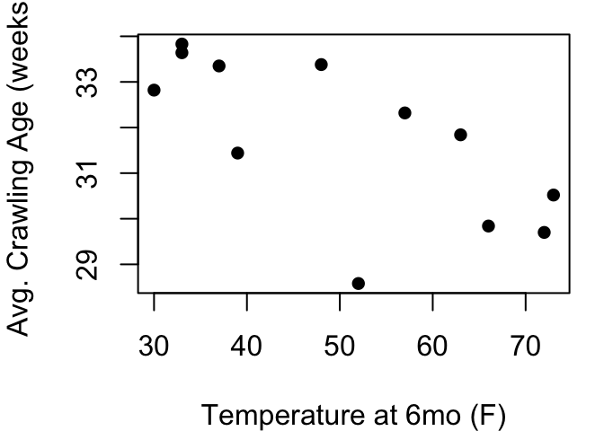
From Figure 5.10 it looks like the hypothesis has some merit. A best fit line would reach from the upper left to the lower right indicating babies with warmer temperatures are crawling earlier than babies learning in colder temperatures. However, this plot is hiding some key information about the data. We have just one point for every birth month, but each birth month includes anywhere from 21 to 49 babies. Some months the standard deviation of crawling age was less than 6 weeks, but others it was greater than 8 weeks. If we treat each point equally, those differences of samples sizes and in-month variability are lost.
Enter Weighted Least Squares (WLS) regression. By applying WLS, you give more weight to observations you trust more, and less weight to those you trust less. Generally in simple linear regression our goal is to fit the \(Y_i = \beta_0 + \beta_1 X_i + \epsilon_i\) model to minimize \(\sum_{i=1}^{n} (Y_i - \hat{Y}_i)^2\), the sum of squared residuals. With WLS we instead aim to minimize weighted residuals \(\sum_{i=1}^{n} w_i (Y_i - \hat{Y}_i)^2\) where, \(w_i\) is the weight assigned to the \(i^{th}\) data point. Along with this, our SST and SSR change to incorporate weights as well:
\[ SSError=SSE=\sum w_i(y_i-\hat{y}_i)^2 \]
\[ SSTotal=SST=\sum w_i(y_i-\bar{y})^2 \]
\[ SSRegression=SSR=\sum w_i(\bar{y}_i-\hat{y}_i)^2 \]
It still holds that SST=SSE+SSR. Comparing \(R^2\) values of models with different weights is not a fair comparison when evaluation options. Choosing suitable and appropriate weights is crucial. Common approaches include:
Inverse Variance Weighting (Most Common)
If each observation has a known variance \(\sigma_i^2\) , assign \(w_i=1/\sigma_i^2\). This means observations with smaller variance (higher precision) get more weight.
Based on Measurement Error
If the measurement error for each \(Y_i\) is known, assign smaller weight to points with larger error.
Subjective or Utility Weights
Sometimes weights reflect how important or relevant each data point is for your particular context.
Iteratively Estimated Weights
When heteroskedasticity is present but true variances are unknown, estimate the relationship between variance and the predictor and then assign weights accordingly.
By understanding when and how to assign weights, you can improve the performance of your regression analysis and draw better conclusions from your data.
In the babies_crawl data, the number of babies for each month is given in the n column, and the standard deviation of crawling age observed within each month is given in sd. From the Central Limit Theorem, we know these two components can give us the standard error for the 12 average crawling ages: \(\frac{sd}{sqrt(n)}\). Using the inverse of standard error as weights will give higher weights to low standard errors and low weights to months with high standard errors.
Figure 5.11 shows the model without weights in a red dashed line, and the model using weights in blue. Each point in the plot is sized relative to it’s weight so we can see the unusually low crawling age at a temperature of 52 is weighted quite low in the weighted model.
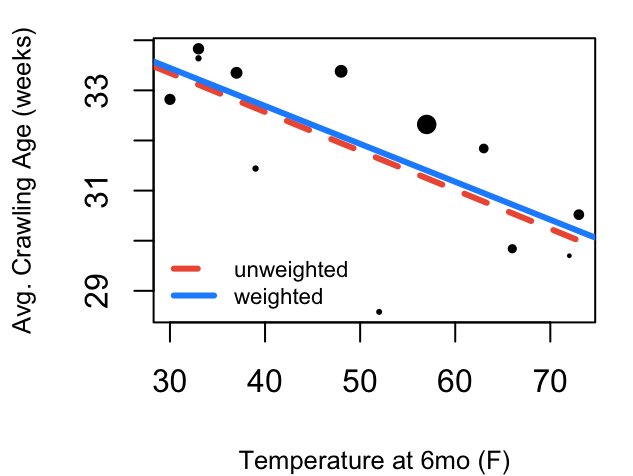
Now for an example that doesn’t have standard deviation provided directly. In the openintro library you’ll find the mammals data frame that contains not only brain and body weight as we looked at earlier, but also information on sleep and dreaming.
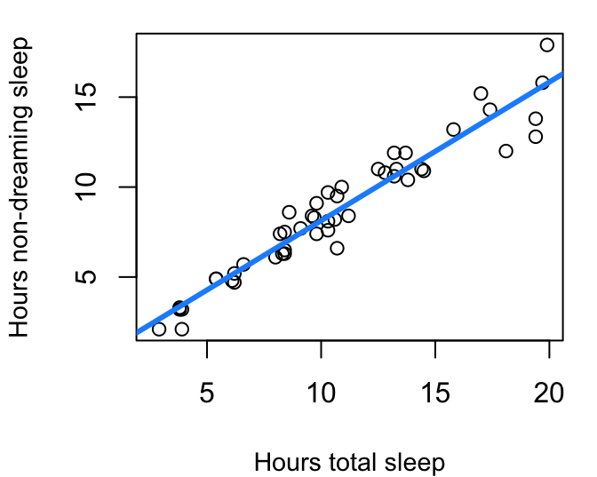
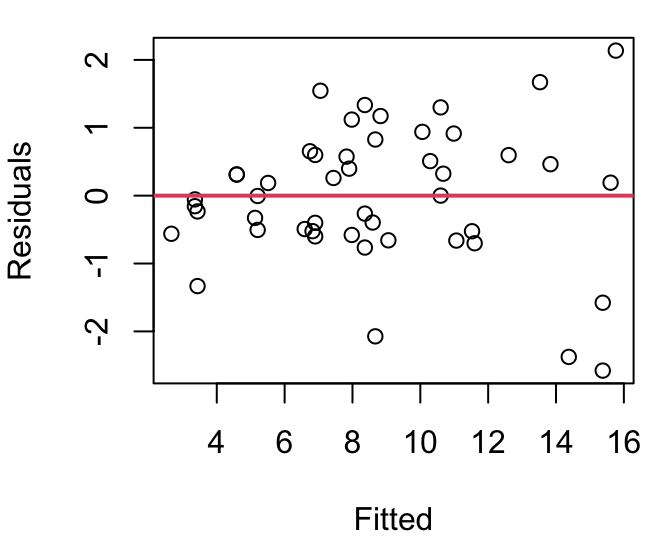
If you split the data into four quartiles and calculate the variance for each group the result is as shown in Figure 5.13 (a). Though close, the relationship between the center of each grouping and the group’s residual variance is not quite linear but a simple square transformation on the group center fixes that. This means the variance of the residuals can be modeled linearly by the square of X. Therefore, to use inverse variance as our weights then, we can use \(\frac{1}{X^2}\).
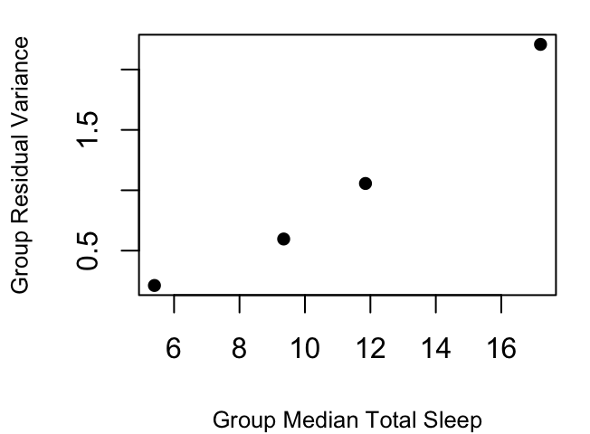
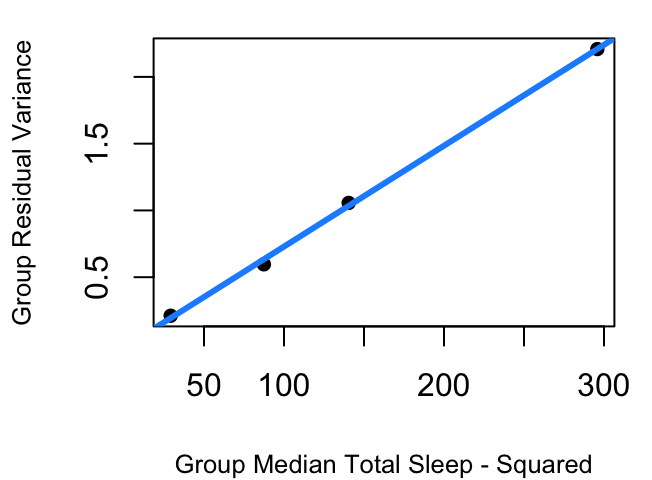
Without incorporating weights, the model is the dashed orchid line shown in Figure 5.14. With the inverse \(X^2\) weights the model is the solid blue line. The models are quite close, but real differences emerge when inference methods are applied under the two models. That is because \(S_R\) now includes the weights:
\[ S_{R,w}=\sqrt\frac{\sum w_i(y_i-\hat{y_i})^2}{n-2} \]
and weights further play a role in the standard errors for the weighted model coefficients as:
\[ SE_{\hat{β}_{0,w}}=S_{R,w}\sqrt{\frac{1}{n}+\frac{\bar{x}_w^2}{\sum w_i(x-\bar{x})^2}} \]
\[ SE_{\hat{β}_{1,w}}=\frac{S_{R,w}}{\sqrt{\sum w_i(x-\bar{x}_w)^2}} \]
where \(\bar{x}_w\) is the weighted mean: \[\bar{x}_w=\frac{\sum(w_i \times x_i)}{\sum{w_i}}\]
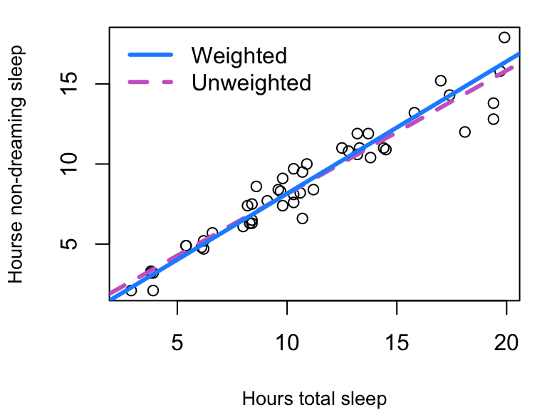
This means in the unweighted model, \(S_R=\) 1.0026 but in the weighted version, \(S_R=\) 0.0902.
Further, for the unweighted model the 95% confidence interval for slope \(\hat \beta_1\) ranges from 0.7064 up to 0.8349 but in the weighted model the interval for \(\hat{\beta}_{1,w}\)is from 0.7717 to 0.8796.
Similarly, inference for Y values corresponding to a particular \(X=x_*\) changes with revised standard error equations:
\[ SE_{\bar{Y}|x_*,w}=S_{R,w}\sqrt{\frac{1}{\sum w_i}+\frac{(x_*-\bar{x}_w)^2}{\sum{(x_i-\bar{x}_w)^2}}} \]
The standard error of the next Y at a given X takes on this form:
\[ SE_{y|x_*,w}=S_{R,w}\sqrt{\frac{1}{w_*}+ \frac{1}{\sum w_i}+\frac{(x_*-\bar{x}_w)^2}{\sum{w_i(x_i-\bar{x}_w)^2}}} \]
where \(w_*\) is the weight associated with \(x_*\), the X location of the prediction.
This means that while the 95% prediction interval for the amount of non-dreaming sleep that is typical for a mammal that gets nine hours total sleep ranges from 5.32 to 9.4 with the unweighted model, our weighted model produces a narrower interval going from 5.68 to 8.98.
In R
The lm command accommodates weights with minimal change to the code you’ve already learned:
mod_mam_sleep_wt<-lm(non_dreaming~total_sleep, data=mammals,
weights=1/mammals$total_sleep^2)
summary(mod_mam_sleep_wt)$coef Estimate Std. Error t value Pr(>|t|)
(Intercept) -0.1039658 0.20031687 -0.5190066 6.062443e-01
total_sleep 0.8256810 0.02681064 30.7967632 2.383219e-32The confint and predict.lm functions can still be used on weighted models just as you did with the simpler models without weights. With prediction intervals, you’ll need to input the weight that should be used at the \(X=x_*\) of interest.
confint(mod_mam_sleep_wt) 2.5 % 97.5 %
(Intercept) -0.5071827 0.2992512
total_sleep 0.7717140 0.8796480predict.lm(mod_mam_sleep_wt, data.frame(total_sleep=c(9,12)),
interval="prediction", weights=c(1/81, 1/144)) fit lwr upr
1 7.327163 5.675607 8.978719
2 9.804206 7.596301 12.012112On Your Own
Install and load the
fivethirtyeightpackage. Using themurder_2015_finaldata file, estimate the 2015 murder rate in large US cities using the 2014 murder rates.Begin by fitting a basic model in the form of murders_2015~murders_2014 regression model. Check all inference assumptions. Which assumptions are met and which need attention?
Develop a model for the variance to be used in a weighted model. Explain your approach.
Fit and interpret your weighted least squares model.
Examine the Rabbit data frame in the MASS library.
Find the variance for each dose level and use that in a weighted regression model predicting blood pressure change. Explain what your model shows.
Complete and interpret a 95% confidence interval for the mean change in blood pressure when given a dose of 80 micrograms of Phenylbiguanide.
Benson, Janette B. 1993. “Season of Birth and Onset of Locomotion: Theoretical and Methodological Implications.” Infant Behavior and Development 16 (1): 69–81. https://doi.org/10.1016/0163-6383(93)80029-8.
Geiman, Claire, and Eric Long. 2023. “Data from: Allometric Brain Reduction in an Insular, Dwarfed Population of Black-Tailed Deer.” Dryad. https://doi.org/10.5061/DRYAD.GQNK98STM.